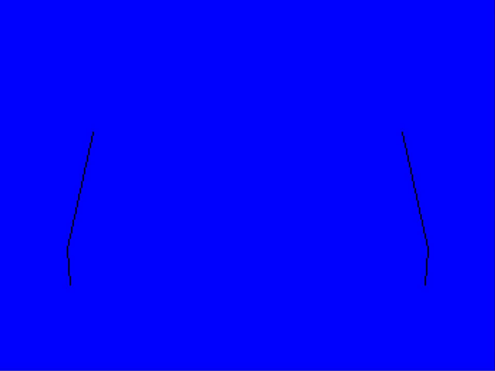
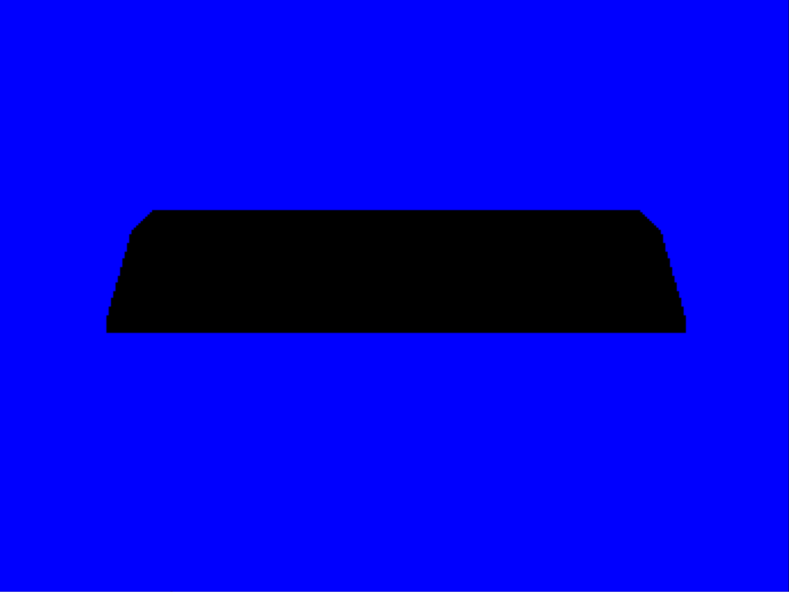
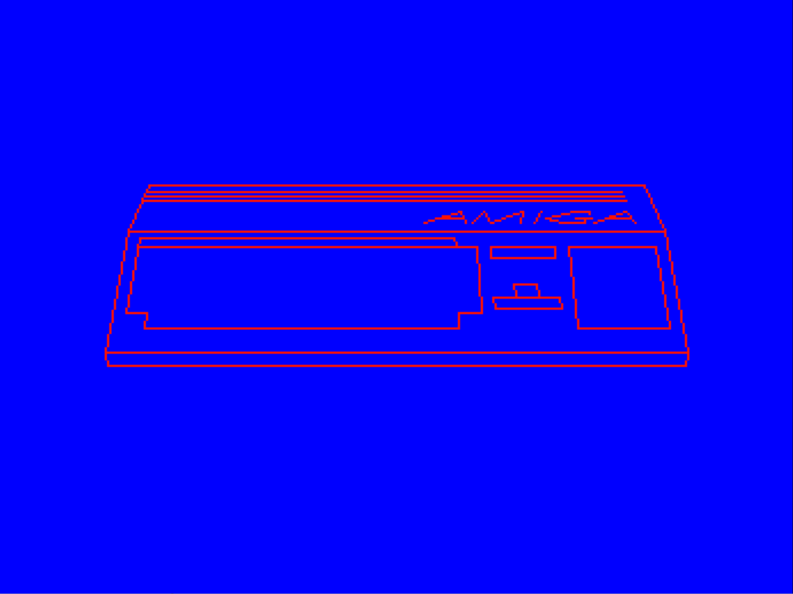

drawing vertical lines to bound the fill
in the mode we use it 'switches on' the fill when it hits the first non-zero bit (blitter fills right-to-left, if I remember correctly)
the bounding lines require 4 blit operations here

the blitter fill can be tripped up if you have overlapping lines or two pixels wide lines
the blit to fill the amiga is just a single operation
we are drawing directly to the frame buffer, but often this would be done to scratch memory first and blitted to the display buffer
generally you'd do this when you have multiple bitplanes (we're just using one here)

then draw edges and details next
there are many lines drawn and these are all individual blit operations
